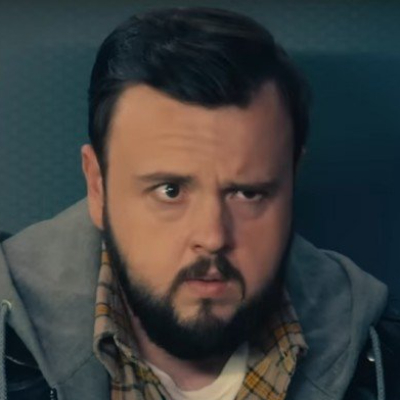

Grupo de Oxford
Jack Rooney
Recusa participar da causa apresentada pelo jogo. É morto por Tatiana em sua casa.
Conteúdo até a temporada 1, episódio 8.
Ver Mapa de Conexões →HISTÓRICO DO PERSONAGEM
Temporada 1
Acompanhe os acontecimentos registrados até o episódio escolhido.
Episódio 01 — Countdown
Ex-pesquisador que construiu uma empresa de alimentos. Mantém amizade próxima com o grupo de Oxford, em especial Will.
Episódio 02 — Red Coast
Participa do jogo ao lado de Jin.
Episódio 03 — Destroyer of Worlds
Recusa participar da causa apresentada pelo jogo. É morto por Tatiana em sua casa.
Episódio 06 — The Stars Our Destination
Com câncer terminal, Will decide usar parte da herança de Jack para comprar um certificado de uma estrela para Jin. O presente expressa sentimentos que ele tem dificuldade de dizer.
Personagens relacionados
- Will DowningAmizade próxima
- Jin ChengAmigos de Oxford
- Auggie SalazarAmigos de Oxford
- Guia do jogoParticipante e guia do jogo
- Tatiana HaasRecusa ao recrutamento e assassinato